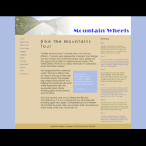
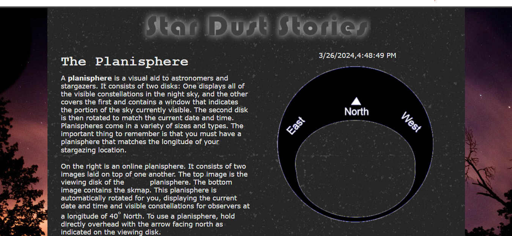
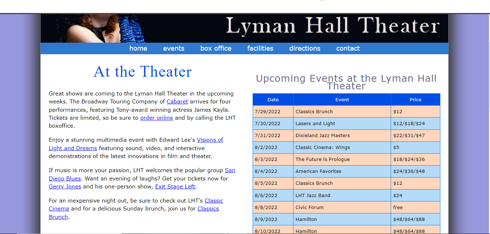
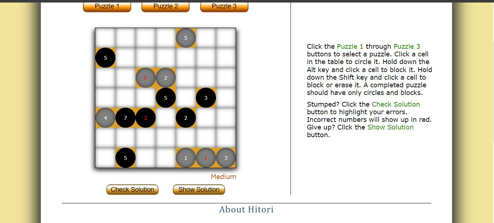

Try It Out Activities
Activity 1-2: Try It Out: Mobile Panini
In this activity, I practice the basics of HTML and created a simple website for a fictional Italian restaurant.
View ActivityActivity 1-4: Try It Out: Mountain Wheels
In this activity, I learned how to style web pages using CSS and applied those skills to create a visually appealing website for a sports equipment store.
 View ActivityActivity 5-2: Try It Out: Star Dust Stories
In this activity, I learned how to make web pages functional and change date time using js and applied those skills to create a visually appealing website
 View ActivityActivity 5-4: Try It Out: Lyman Hall Events
In this activity, I learned how to make dynamic tables using js and applied those skills to create a visually appealing website
 View Activity6-2 Try It Out: Hitori Puzzle Page
In this activity, I learned how to create a find the box game and applied those skills to create a visually appealing website
 View Activity